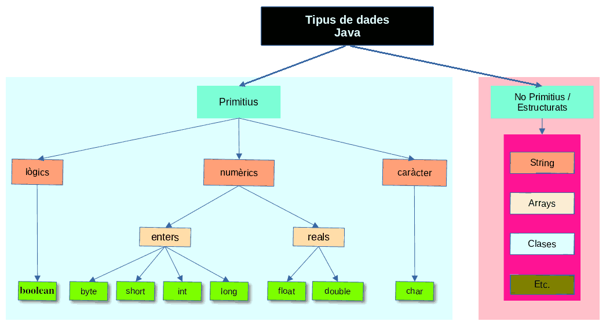
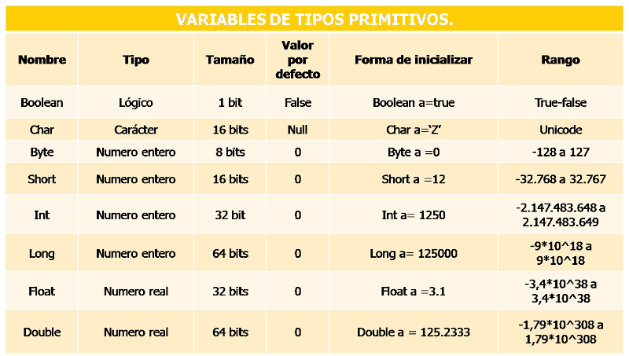
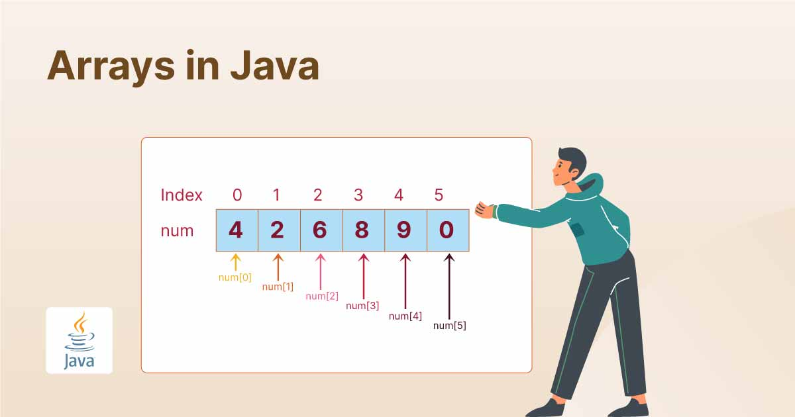
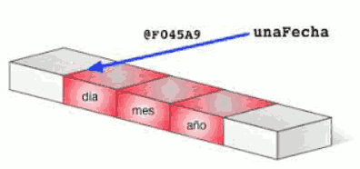

En un ordinador tota la informació s'emmagatzema mitjançant els símbols "0" y "1". Així, la següent seqüència de zeros i uns:
01000001
ha de ser interpretada per l'ordinador. Si la interpreta com un nombre enter, serà el valor 65, si la interpreta com un caràcter serà la lletra "A", si la interpreta com un valor real serà 65.0. Així, encara que al final tot són zeros i uns dins de la memòria del nostre ordinador, és la manera d'interpretar-los el que marca la diferència, tant en emmagatzemar-los com en recuperar-los.
Aquest és el motiu pel qual els llenguatges de programació compten amb el concepte de tipus de dades: es tracta de diferents maneres d'interpretar eixos "zeros i uns" en funció d'unes certes configuracions que estableixen l'espai utilitzat així com la representació aplicada per a codificar i descodificar eixa informació.
En programació, un tipus de dades es refereix a una categoria o conjunt de valors que una variable o expressió pot tindre. Cada tipus de dades s'identifica per un nom i és capaç d'emmagatzemar una determinada classe d'informació així com un rang de valors concret.
Java compta amb un xicotet conjunt de tipus de dades primitius. Podríem considerar-los fonamentals, ja que la major part dels altres tipus (estructurats o complexos), són composicions a partir d'aquests més bàsics. Aquests tipus de dades primitius serveixen per a gestionar els tipus d'informació més bàsics, com a nombres de diverses classes o dades de tipus vertader/fals (també coneguts com a "valors booleans" o simplement "booleans").

Tipus de dades primitius
-
Lògic o Booleano
Només existeix un tipus, boolean, i té la finalitat de facilitar el treball amb valors "vertader/fals" resultants, per regla general, d'avaluar expressions. Els dos valors possibles d'aquest tipus són true i false (en minúscules).
-
Numèrics enters
A Java existeixen quatre tipus destinats a emmagatzemar nombres enters. L'única diferència entre ells és el nombre de bytes usats per al seu emmagatzematge i, en conseqüència, el rang de valors que és possible representar amb ells. Tots ells empren una representació que permet l'emmagatzematge de números negatius i positius. El nom i característiques d'aquests tipus són els següents:
- byte: empra un sol byte (8 bits) d'emmagatzematge. Això permet emmagatzemar valors en el rang [-128, 127].
- short: usa el doble d'emmagatzematge que l'anterior, la qual cosa fa possible representar qualsevol valor en el rang [-32.768, 32.767].
- int: empra 4 bytes d'emmagatzematge i és el tipus de dada sencera més emprada. El rang de valors que pot representar va de -231 a 231-1. es a dir [ -2.147.483.648 a 2.147.483.647].
- long: es el tipus enter de major grandaria, 8 bytes (64 bits), amb un rang de valors des de -263 a 263-1; [–9,223,372,036,854,775,808 a 9,223,372,036,854,775,807]. Per a especificar que un literal serà un enter de tipus long es finalitzarà amb el caràcter 'L'. Així tenim que 63 serà un enter (ocuparà 4 bytes) i 63L serà un enter llarg (ocuparà 8 bytes).
-
Numèrics reals o en punt flotant
Permeten representar números tant molt grans com molt xicotets a més de nombres decimals. Java disposa de 2 tipus concrets en aquesta categoria:
- float: conegut com a tipus de precisió simple, empra un total de 32 bits. Amb aquesta mena de dades és possible representar números en el rang de 1.4x10-45 a 3.4028235x1038. Per a especificar que un literal serà de tipus float ha d'anar seguit del caràcter 'F'. Així 25F, 2.3F seran literals de tipus float.
- double: segueix un esquema d'emmagatzematge similar a l'anterior, però usant 64 bits en lloc de 32. Això li permet representar valors en el rang de 4.9x10-324 a 1.7976931348623157x10308.
Si bé amb tots dos tipus de dades es representen números amb valors decimals, el tipus de dades double ofereix la possibilitat de representar un major nombre de valors decimals (major precisió), entre 15 i 16, mentre que float, sol treballar amb 6 o 7 decimals.
Els valors numèrics reals són molt més lents de processar que els valors sencers, a més de que ocupen major espai en memòria.
-
Caràcter
Només existeix un tipus, char, i s'utilitza per a emmagatzemar caràcters individuals (lletres, símbols numèrics, signes d'expressió i altres símbols: *, \, &, ~, ...). En realitat és considerat també un tipus numèric, si bé la seua representació habitual és la del caràcter associat codi que emmagatzema. Utilitza 16 bits i s'usa la codificació UTF-16 de Unicode. Els caràcters van delimitats per cometes simples: 'a'; '7'.
És important tindre en compte que el tipus de dades char emmagatzema el valor del caràcter en la seua forma numèrica, segons la taula de codis Unicode (epacio -> 32; ' A' -> 65; 'b' -> 98; ' 0' -> 48; '9' -> 57; etc). Existeixen dos valors especials que són: 0x0000 -> que s'utilitza per al caràcter null; 0xFFFF -> que s'està reservat per al codi especial "not a character".

Tipus de dades estructurats
Els tipus de dades primitius que acabem de veure es caracteritzen per poder emmagatzemar un únic valor. Excepte aquest reduït conjunt de tipus de dades primitius, que faciliten el treball amb números, caràcters i valors booleans, tots els altres tipus de Java són objectes, també anomenats tipus estructurats o "Classes".
Els tipus de dades estructurats es denominen així perquè en la seua major part estan destinats a contindre múltiples valors de tipus més simples, primitius. També se'n diu moltes vegades "tipus objecte" perquè s'usen per a representar objectes. Pot ser que et sone més aquest nom.
Los tipos de datos estructurados se denominan así porque en su mayor parte están destinados a contener múltiples valores de tipos más simples, primitivos. También se les llama muchas veces "tipos objeto" porque se usan para representar objetos. Puede que te suene más ese nombre.
-
Cadenes de caràcters
Encara que les cadenes de caràcters no són un tipus simple a Java, sinó una instància de la classe String, el llenguatge atorga un tractament bastant especial a aquest tipus de dades, la qual cosa provoca que, a vegades, ens semble estar treballant amb un tipus primitiu, especialment en la manera de declarar les variables.
int edat = 25; // declaració de variable tipus int
String nom = "Candela Miralles Serret"; // declaració de variable tipus cadena de caràcters
Les cadenes de caràcters es delimiten entre cometes dobles, en lloc de simples com els caràcters individuals.
-
Vectors o arrays
Són col·leccions de dades d'un mateix tipus. També són coneguts popularment com arrays.
Un vector és una estructura de dades en la qual a cada element li correspon una posició identificada per un o més índexs numèrics sencers. També és habitual dir matrius als vectors que treballen amb dues dimensions.

-
Tipus definits per l'usuari
A Java existeixen infinitat de classes en la plataforma, i de tercers, per a realitzar quasi qualsevol operació o tasca que es puga ocórrer: llegir i escriure arxius, enviar correus electrònics, executar altres aplicacions o crear cadenes de text més especialitzades, entre un milió de coses més. Totes eixes classes són tipus estructurats també.
I per descomptat pots crear les teues pròpies classes per a fer tot tipus de tasques o emmagatzemar la informació que desitges i del tipus que desitges. Serien tipus estructurats definits per l'usuari.

-
Tipus envoltori o wrapper
Java compta amb tipus de dades estructurades equivalents a cadascun dels tipus primitius que hem vist.
Així, per exemple, per a representar un enter de 32 bits (int) dels quals hem vist al principi, Java defineix una classe anomenada Integer que representa i "embolica" a la mateixa dada però li afig uns certs mètodes i propietats útils per damunt. A més, una altra de les finalitats d'aquests tipus "envoltori" és facilitar l'ús d'aquesta classe de valors allí on s'espera un objecte en lloc d'un tipus primitiu.
Aquests tipus equivalents als primitius però en forma d'objectes són: Byte, Short, Integer, Long, Float, Double, Boolean i Character (8 igualment).